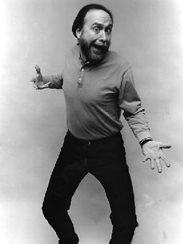
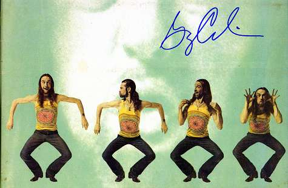
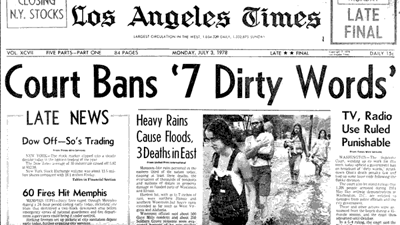
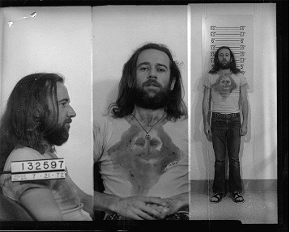
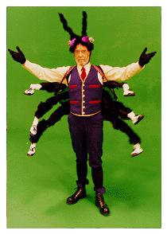
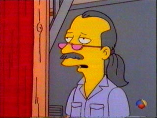
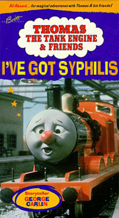
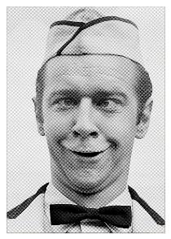

|
George Carlin"Shit, piss, fuck, cunt, cocksucker, motherfucker, tits." On July 29, 1957, Carlin was dishonorably discharged for failing to report for guard duty. And driving while intoxicated at 0030 hours. And disrespecting Air Policemen, failure to comply with lawful instruction, and refusal to obey direct orders. And driving government-issued vehicles with the deliberate intention of causing disruption and property damage. Carlin was regularly counseled by supervisors and his First Sergeant concerning not only his personal appearance but his inability to maintain his bunk bed in the prescribed manner. He consumed alcoholic beverages to such an extent that he could neither control his movements nor fully explain his responsibilities as an Airman. At age seventeen, he decided to pursue a career in comedy. "There are 400,000 words in the English language," Carlin mused. "And there are seven of them that you can't say on television. What a ratio that is. 399,993 to seven. They must really be bad. You know the seven don't you? Shit, piss, fuck, cunt, cocksucker, motherfucker, and tits. Those are the heavy seven. Those are the ones that will infect your soul, curve your spine and keep the country from winning the war. I can dig why some of those words got on the list, like cocksucker and motherfucker. Those are heavyweight words. There's a lot going on there, man. Besides the literal translation and the emotional feeling. They're just busy words. There's a lot of syllables to contend with. And those K's. Those are aggressive sounds, they jump out at you. Forget those seven, they're out. But, there are some two-way words. You can prick your finger -- but you can't finger your prick." Since that time, Trey Parker and Matt Stone's South Park has successfully engaged words like shit, piss, and cunt on basic cable, but for awhile there it looked like Carlin was doing more harm than good. After a complaint was made to the FCC by a lone moralist listening to a pirate radio broadcast of Seven Dirty Words, the FCC issued a Declaratory Order against the station, who promptly escalated matters to the Supreme court. They ruled the seven words to be "indecent," effectively allowing the FCC to ban them from the airwaves during hours when children might hear them. Carlin himself was arrested during a Milwaukee appearance for violating obscenity laws: [Carlin] did on July 21, 1972 at the "Summerfest" grounds located on the lakefront in the city of Milwaukee, while performing before a large gathering including minor children ranging in age from infancy to the upper teens, use as part of his act the words "fuck," "fucker," "mother-fucker," "cock-sucker," "asshole," "tits," and furthermore did direct to this aforementioned gathering during his performances the statement "I'd like to fuck every one of you people out there," such language tending to create or provoke a disturbance, all contrary to the provisions of the above ordinance. This complaint is based upon the personal observation of Milwaukee Police Patrolman Elmer Lenz. However, the Seven Dirty Words routine served to solidify Carlin's link with youth culture, enabling him to be the very first guest on Saturday Night Live. Carlin's performances became renowned for their unpredictability in the 1970s and early 1980s; sometimes he'd stalk off in the middle of the act if the laughs weren't there, other times he'd verbally abuse the audience, and still other times he wouldn't show up at all. Hypocrisy is his number-one target, followed closely by religion. "When the Catholics start laying their trip on you, you notice very early in life what a load of shit it is. The hypocrisy is just breathtakingly apparent, even to a child. But what I hated most was seeing those priests and brothers getting so much pleasure out of inflicting pain. I wondered what was wrong with them." George Carlin smoked pot nearly every day for thirty years. "I'd wake up in the morning and if I couldn't decide whether I wanted to smoke a joint or not, I'd smoke a joint to figure it out. And I stayed high all day long. When people asked me, 'do you get high to go onstage?' I could never understand the question. I mean, I'd been high since eight that morning. Going onstage had nothing to do with it. When you're high, it's easy to kid yourself about how clever certain mediocre pieces of material are." Eventually, his enjoyment of marijuana waned. "Let's say I had a little baggie lying around the office. I'd get up, come over here, fuck around, shuffle a few papers, and all the while I'd be thinking about the pot. I'd say to myself, well... whatever I'm going to do today, it's obviously going to be more fun if I have a hit or two. But I got to the point where taking those hits made me feel dumber than I'd felt before." These days Carlin doesn't smoke (so much), and his riffs about the on-again, off-again cigar trends are worth their weight in tobacco. "Haven't we had about enough of this cigar smoking shit in this country? When is this going to end? When is this shit going to go away? When are these fat, arrogant, overpaid, overfed, over privileged, overindulged white collar business criminal asshole cocksuckers gonna put out their cigars and move on to their next abomination? White pussy businessmen sucking on a big brown dick! That's all it is, that's all it ever was, a big brown dick. Sigmund Freud said sometimes a cigar is just a cigar. Oh yeah, well, sometimes it's a big brown dick! With a fat, arrogant, white collar business criminal asshole sucking on the wet end of it. But, hey, the news is not all bad for me, you want to know the good part? Cancer of the mouth! Good, fuck 'em, it makes me happy, it's an attractive disease, goes great with a CELL PHONE! So, light up, suspender man, and suck that smoke deep into your empty suit and blow it out your ass, you fuckin' cocksucker!" He continued to enjoy LSD and peyote throughout the sixties - and then he got into cocaine. "That was concurrent with my change from a straight comic to the album and counterculture period, and those drugs served their purpose. They helped open me up. You know, if a drug has anything going for it at all, it should be self-limiting. It should tell you when you've had enough. Acid and peyote were that way for me. Cocaine was different. It kept saying you haven't had enough. I became an abuser almost instantly." Carlin himself enjoys stealing, but not jokes. At one point, his office was cluttered from wall to wall with signs he'd yoinked from hotel lobbies, traffic intersections, police stations and restaurants. "I think it keeps the child alive in me. There's a thrill when you steal something in plain view of other people. When you drop a newspaper over a sign and walk away with it, or take something off a wall and the sound of glue ripping makes people turn around. Your heart is racing, it's a rush." On blacks and women: "When I see blacks and women wanting to gain their freedom so they can become corporation executives, I realize that the situation is hopeless. What's the good of having freedom if you then willingly go off and become a slave to an amoral institution? It's especially depressing to see blacks wanting to dive into the mainstream of American commercial life. They come from a magnificent African culture based on aesthetics, and now they all want to become fort builders like the vicious people who originally enslaved them." Who else has George Carlin inspired? How about I Was Just Thinking columnist Mike Barnicle from the Boston Globe, who resigned in disgrace amid allegations of plagiarism. It was discovered that he'd stolen eight jokes from Carlin over the course of several columns. Barnicle admitted at a news conference that he'd been "sloppy" or even "lazy" for lifting bits from Carlin, but steadfastly maintained he wasn't guilty of plagiarism due to the fact that he "hadn't read the Carlin book". However, a Boston TV station replayed footage of Barnicle recommending the book -- appropriately titled Brain Droppings -- to an audience of home viewers. His resignation drew cheers and laughter from the newsroom staff, who set about producing further evidence of Barnicle's plagiarism and journalistic fraud. (Not surprisingly, Barnicle has continued to downplay his theft as a misunderstanding on his still-running radio show.) The most blatant theft of George Carlin's material was perpetrated by Joan Rivers on The Tonight Show. Carlin couldn't believe it, because it was a gag he'd used regularly. The joke was: When my mother was pregnant with me, she carried me very low. In fact, for the last few weeks my feet were sticking out. And his follow-up, which Joan also used, was: However, she did tell me it came in handy on stairs. "Theft is one of the risks you run when you buy material," said Carlin later, "and I'll bet Joan bought that joke." As well as cameo appearances in forgettable pantywaist flicks like Jay and Silent Bob Strike Back, Dogma, and Bill and Ted's Excellent Adventure, Carlin stepped into shoes formerly worn by Alec Baldwin and Ringo Starr down at Shining Time Station, as the diminutive narration engineer Mr. Conductor of Thomas the Tank Engine. For children ages 2-5. Carlin briefly acted in (and executed) his own sitcom, The George Carlin Show on FOX, co-written
by Jonathan ("King of the Hill") Aibel and Brian ("Max Headroom") Roberts. In the premiere episode, George, a taxi driver, walks off the job when he's ordered to cut his ponytail - but his problems have more to do with his huge gambling debt. In the final broadcast, George takes pity on a has-been '60s rocker after seeing him perform for spare change in the street. After FOX was compelled to digitally manipulate and distort Carlin's mouth during extended sequences of chain swearing in several episodes, and The George Carlin Show was cancelled after two seasons. Later, he was seduced by MCI to appear in television commercials for 10-10-321 long distance services. |